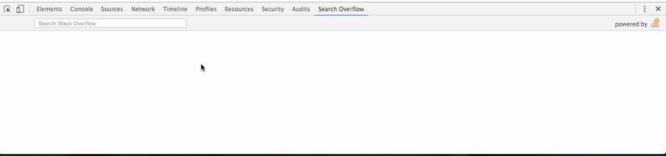

Search Overflow
Now you don't have to leave your console to search for answers. This extension lets you search Stack Overflow Q&As right from DevTools.

Features:
- instant searching
- complete QA data with code snippets
- arrow key navigation:
- Left-Right to switch between panes
- Up-Down to move between questions
Credit:
- Using Stack Exchange API
- QA Icon by Sergey Novosyolov from the Noun Project